6. Statistics and Linear Algebra Preliminaries¶
Chinese proverb
If you only know yourself, but not your opponent, you may win or may lose. If you know neither yourself nor your enemy, you will always endanger yourself – idiom, from Sunzi’s Art of War
6.1. Notations¶
m : the number of the samples
n : the number of the features
 : i-th label
: i-th label : i-th predicted label
: i-th predicted label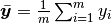 : the mean of 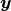.
: the label vector.
: the predicted label vector.
6.2. Linear Algebra Preliminaries¶
Since I have documented the Linear Algebra Preliminaries in my Prelim Exam note for Numerical Analysis, the interested reader is referred to [Feng2014] for more details (Figure. Linear Algebra Preliminaries).
Linear Algebra Preliminaries¶
6.3. Measurement Formula¶
6.3.1. Mean absolute error¶
In statistics, MAE (Mean absolute error) is a measure of difference between two continuous variables. The Mean Absolute Error is given by:
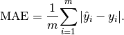
6.3.2. Mean squared error¶
In statistics, the MSE (Mean Squared Error) of an estimator (of a procedure for estimating an unobserved quantity) measures the average of the squares of the errors or deviations—that is, the difference between the estimator and what is estimated.
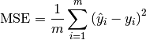
6.3.3. Root Mean squared error¶
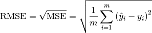
6.3.4. Total sum of squares¶
In statistical data analysis the TSS (Total Sum of Squares) is a quantity that appears as part of a standard way of presenting results of such analyses. It is defined as being the sum, over all observations, of the squared differences of each observation from the overall mean.
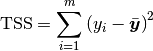
6.3.5. Explained Sum of Squares¶
In statistics, the ESS (Explained sum of squares), alternatively known as the model sum of squares or sum of squares due to regression.
The ESS is the sum of the squares of the differences of the predicted values and the mean value of the response variable which is given by:
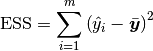
6.3.6. Residual Sum of Squares¶
In statistics, RSS (Residual sum of squares), also known as the sum of squared residuals (SSR) or the sum of squared errors of prediction (SSE), is the sum of the squares of residuals which is given by:
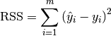
6.3.7. Coefficient of determination ¶
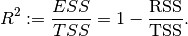
Note
In general (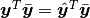), total sum of squares = explained sum of squares + residual sum of squares, i.e.:
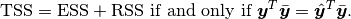
More details can be found at Partitioning in the general ordinary least squares model.
6.4. Confusion Matrix¶
Confusion Matrix¶
6.4.1. Recall¶
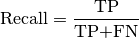
6.4.2. Precision¶
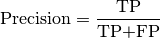
6.4.3. Accuracy¶
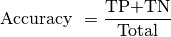
6.4.4.  -score¶
-score¶
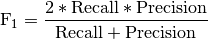
6.5. Statistical Tests¶
6.5.1. Correlational Test¶
Pearson correlation: Tests for the strength of the association between two continuous variables.
Spearman correlation: Tests for the strength of the association between two ordinal variables (does not rely on the assumption of normal distributed data).
Chi-square: Tests for the strength of the association between two categorical variables.
6.5.2. Comparison of Means test¶
Paired T-test: Tests for difference between two related variables.
Independent T-test: Tests for difference between two independent variables.
ANOVA: Tests the difference between group means after any other variance in the outcome variable is accounted for.
6.5.3. Non-parametric Test¶
Wilcoxon rank-sum test: Tests for difference between two independent variables - takes into account magnitude and direction of difference.
Wilcoxon sign-rank test: Tests for difference between two related variables - takes into account magnitude and direction of difference.
Sign test: Tests if two related variables are different – ignores magnitude of change, only takes into account direction.